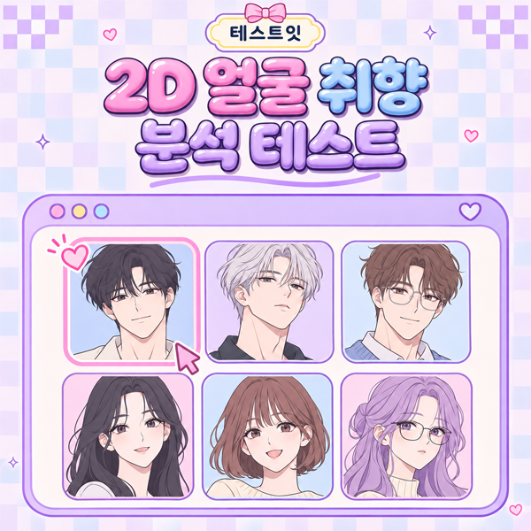

참가 얼굴은 랜덤으로, 서로 다른 분위기끼리 우선 만나요.
서로 다른 분위기끼리 우선 만나도록 다시 짰어요.
공유된 결과를 보고 있어요. 내 취향도 찾아보세요.
두 얼굴 중 더 마음에 드는 쪽을 누르면 다음 대결로 넘어가요. 살아남은 얼굴은 다음 라운드에서 다시 만나게 돼요.
32강은 전체 64명 중 무작위 32명이 참가하고, 매 라운드 얼굴상과 분위기가 다른 얼굴끼리 우선 만나요. 잘못 골랐다면 ‘이전 선택’으로 되돌릴 수 있어요.
우승자는 마지막에 직접 고른 얼굴, 2위는 결승에서 맞붙은 얼굴이에요.
이미지를 길게 눌러 저장해 주세요.
이 테스트를 실행하려면 브라우저의 자바스크립트를 켜주세요.